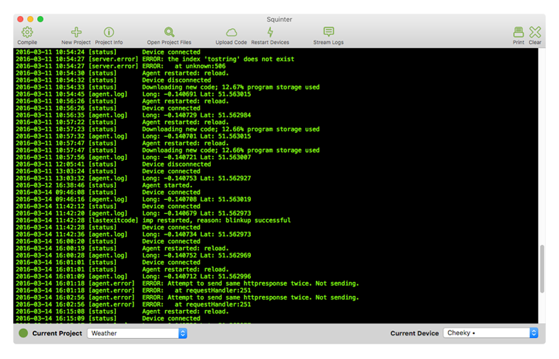

Squinter“A Squirrel Integrator”
Contents |
Debugging Code
You can retrieve the most recent log entries for the selected device in one go (up to a maximum of 200), or you can stream logs from the device: entries will appear in Squinter’s main window in real time. You can currently only stream from up to five devices at a time.

When you upload code — using the ‘Upload’ button or the ‘Device Groups’ menu option — the Electric Imp impCloud will perform a syntax check. Any errors it spots will be reported in Squinter’s log window. Line numbers refer to the compiled code, so you can use two actions in the ‘View’ menu to list the current compiled code to help you track down the errors. These two options — one for device code, the other for agent code — will list the compiled source for the currently selected Device Group.
If the log window becomes too crowded, you can clear it using the ‘Clear’ button in the toolbar, which is also home to a number of shortcuts to various functions provided by Squinter’s menus. You can also print the current contents of the log window if you have a printer.
Next: Configuring Squinter